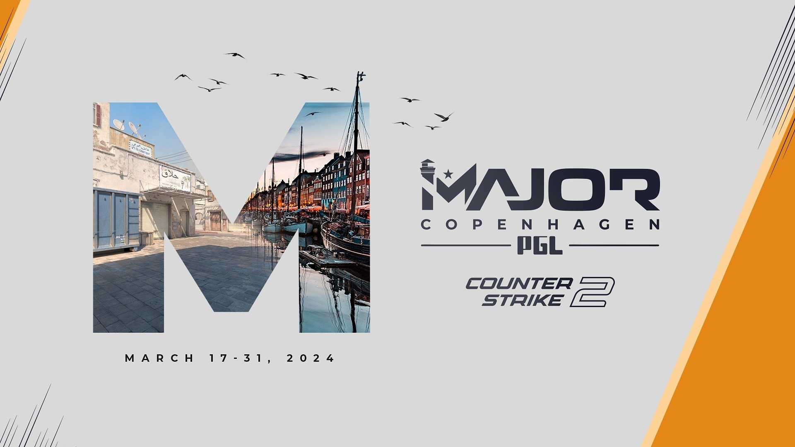

Counter-Strike 2 (CS2) terá primeiro Major na Dinamarca, em março de 2024
PGL CS2 Major Copenhagen 2024 será primeiro torneio do tipo com o novo jogo; veja mais detalhes

O Counter-Strike 2 (CS2) terá seu primeiro Major na Dinamarca, entre 17 e 31 de março de 2024. O PGL CS2 Major Copenhagen 2024 foi confirmado nesta terça-feira (28) pela própria PGL, que volta a ser responsável por um mundial de Counter-Strike após a realização do PGL Major Antwerp 2022. A informação chega poucos dias após a Valve revelar que iria descartar o Major marcado para ocorrer em novembro de 2023 e que o BLAST.tv Paris Major 2023 encerraria o ciclo de campeonatos mundiais do Counter-Strike: Global Offensive (CS:GO).
O campeonato será o quarto Major da franquia da Valve a ser organizado pela PGL. Além do PGL Major Antwerp 2022, a empresa da Romênia também esteve à frente do PGL Major Kraków 2017 e do PGL Major Stockholm 2021, que marcou o retorno do mundial após o começo da pandemia de Covid-19.
A PGL também confirmou que serão 24 equipes disputando a premiação total do PGL CS2 Major Copenhagen 2024, que será de US$ 1,25 milhão (cerca de R$ 6,25 milhões). O valor do prêmio é o mesmo dos últimos mundiais e pode ser considerado baixo pelas organizações, visto que era esperado um aumento na premiação por conta do cancelamento do Major de CS:GO de novembro. Além disso, foi mencionado o local onde as equipes batalharão pelo título mundial: a Royal Arena, um prédio que já recebeu muitas competições organizadas pela BLAST.
O Counter-Strike 2 (CS2) foi anunciado pela Valve no dia 22 de março com um teste limitado para jogadores selecionados. Como a evolução da franquia para o motor gráfico Source 2 era aguardada por muitos fãs, a notícia fez a alegria de toda a comunidade, que agora aguarda pelo lançamento oficial. O título deve chegar no verão do hemisfério norte, que corresponde ao inverno no Brasil e no restante do hemisfério sul.
A chegada do CS2 também marca o fim do ciclo do CS:GO, que terá seu último Major ocorrendo no mês de maio e suas competições finais sendo organizadas até o lançamento de seu sucessor.